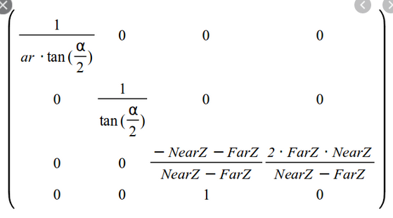

о программировании игры на javascript и применении для этой цели canvas и webgl технологий. У многих вероятно webgl ассоциируется с трехмерной графикой, однако не обязательно средствами webgl реализуется именно 3d графика и не обязательно 3d графика выводится средствами webgl На самом деле webgl не упрощает работу с графикой, в ней в любом случае присутствует много математических расчетов. WebGL лишь позволяет использовать возможности графического ускорителя видеокарты и тем самым оптимизируется процесс рендеринга.
Собственно что есть графика: в первую очередь графика делится на растровую и векторную. В растровой графике основными примитивами являются пиксели, которые размещаются в двумерном массиве, который прямо отображается на экране.
векторная графика строится из примитивов, таких как вершины, треугольники, которые обьединяются в модели.

Процесс перевода векторной графики в растровую называется рендерингом. Механизм рендерига слабо отличается для двухмерной и трехмерной графики. Рендеринг можно разделить на 2 этапа
- преобразование вершин в экранные координаты
- установка цвета отдельных пикселей
В понятиях webgl эти два этапа выполняются при помощи вершинного и пиксельного шейдера. Шейдеры пишутся на специальном языке glsl и выполняются на видеокарте. Однако преобразование это может быть выполнено и на js, оно совсем не сложное и в точности совпадает с тем, что мы бы сделали шейдером
Так выглядит цепочка преобразований рендеринга
На рисунке изображена цепочка преобразований, состоящая из
- - матрицы проекции
- - матрицы камеры
- - матрицы мира
Последовательное произведение исходного вектора на все эти матрицы вернет вектор в экранных координатах. Стоит заметить, что преобразование для трехмерного пространства будет выполняться с 4х мерным вектором и соответственно с матрице 4 на 4. С случае же 2д, размерность их будет 3.

Рассмотрим детальнее для чего все это нужно и как это работает. На самом деле в трехмерной графике нет ничего магического. Она предельно проста
Трехмерные модели состоят из набора вершин, связанных индексами в примитивы, например треугольники Из набора треугольников строится собственно модель
Модель в файле размещается в своей система координат, обычно она центрована в нулевой точке. для помещения ее в игровое пространство к ней применяются какие либо трансформации например масштабирование, перемещение или повороты. Трансформация любая удобно записывается в виде матрицы. Применение трансформации есть умножение всех векторов вершин модели на матрицу. Так же трансфорации могут комбинироваться произведением самих матриц. Это очень удобно, потому что позволяет создать сразу необходимые функции лишь для базовых трансформации и ими сформировать необходимую матрицу.

Матрица камеры работает аналогично, она выделяется лишь для того, чтобы получить возможность управлять не одним обьектом, а всеми обьектами на сцене.
Матрица проекции устроена чуть сложнее, и преобразование в экранные координаты имеет свои особенности. Простейшим случаем преобразования в экранные координаты может являться просто отбрасываение Z-координаты в таком случае мы получаем изометрическую проекцию. Если же требуется получить перспективу, применяется просто деление x y координат на преобразованную z составляющую. Так же результат x y z будет совпадать как для обьектов расположенных сзади и спереди, поэтому необходимо использовать w составляющую, которая будет отрицательной для всех обьектов за камерой.
Существуют готовые алгоритмы формирования матрицы проекции, с учетом угла обзора, размеров экрана вывода, расстояний до дальней и ближней плоскости отсечения. Таким образом отображение будет происходить только тех предметов, которые попадают в трехмерную трапецию.
Двухмерный случай можно рассматривать как частный случай трехмерного преобразования, в котором исключается z координата, так же матрица проекции будет отвечать лишь за масштабирование изображения в размеры видимого экрана.